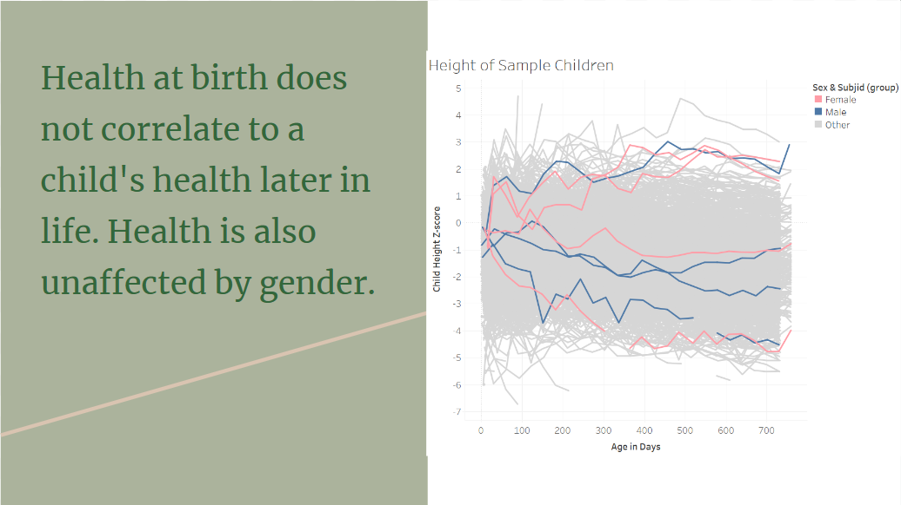
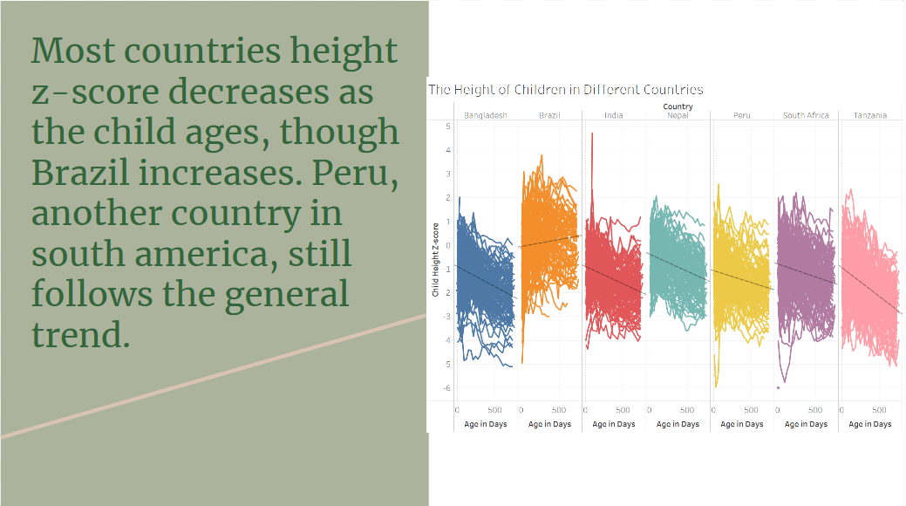
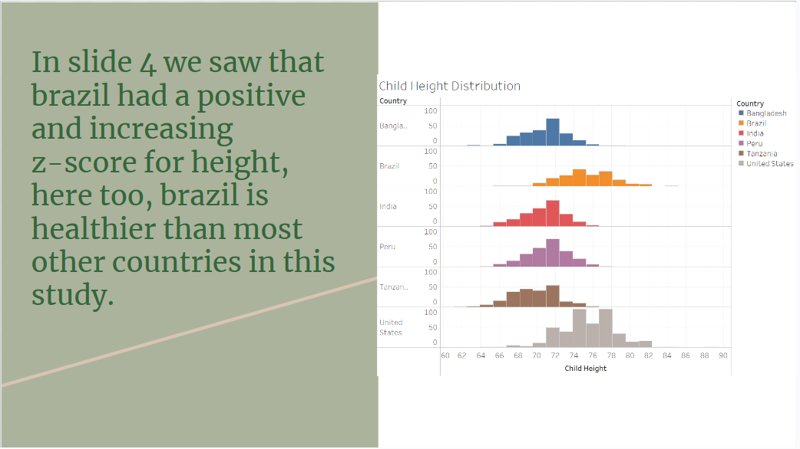

Lego My Data!
What's Normal About Marathons?
What is a Healthy Child?
A z-score is the number of standards of deviations from the mean a data point is. It is calculated by subtracting the mean from the data point, and then dividing that by the standard deviation.


